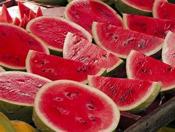
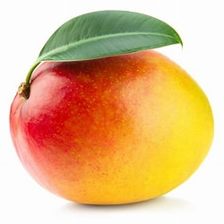

ჩემი საყვრელი ხილის ჩამონათვალი
ქოქოსი
ჩემთვის ქოქოსი არის ერთ-ერთი საუკეთესო ხილი, ქოქოსი შეიცავს ბევრ ვიტამინებს,
ასევე ჩემთვის განსაკუთრებული ხილია რადგან ის ჩვენთან საქართველოში დიდი რაოდენობით არ არის. მე ასევე მომწონს მისი უცნაური გარსი, ამით გამოვარჩევ ქოქოს
სხვა ხილისგან.
საზამთრო
დარწმუნებული ვარ საზამთრო არა მარტო ჩემთვის არამედ უამრავი ხალხისთვის საყვარელი ხილია. მე მომწონს საზამთრო, რადგან არის დიდი გემრიელი და არც თუ ისე ძვირი.
მანგო
მანგო აძლიერებს იმუნიტეტს, ეწინააღმდეგება კიბოსა და გულ-სისხლძარღვთა დაავადებების განვითარებას. მეცნიერებმა მანგოში აღმოაჩინეს ანტივირუსული თვისების მქონე
ფერმენტი მაგნიფერონი, მას იყენებენ ჰერპესის სამკურნალოდ. მანგოს კანისა და კურკების ფქვილს იყენებენ შემკვრელად, ფოთლებსა და ტოტებს - კბილის პასტის მაგივრად.